Tessy
Tessy
ID photos, made simple.
Frame. Refine. Print. Create passport, visa, and ID photos right on your iPhone or iPad, and print them at true size at home.
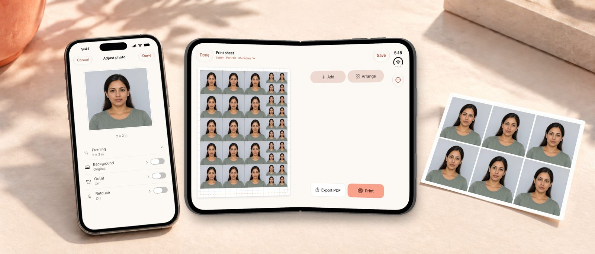
From photo to print sheet in four steps
-
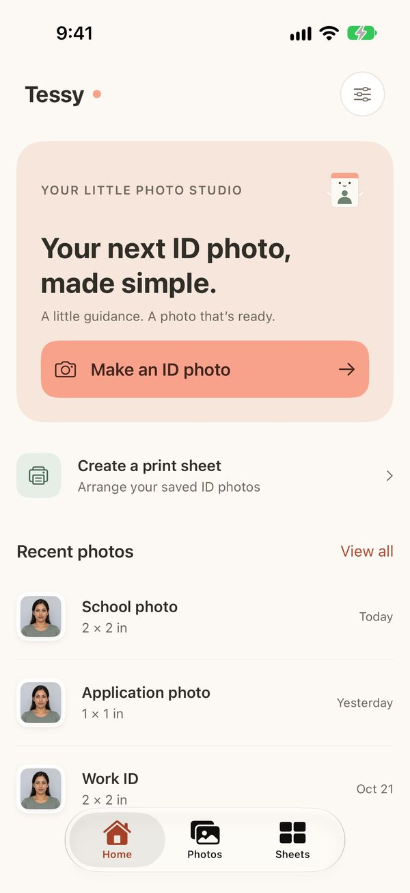
1. Start
Tap Make an ID photo and pick the size you need.
-
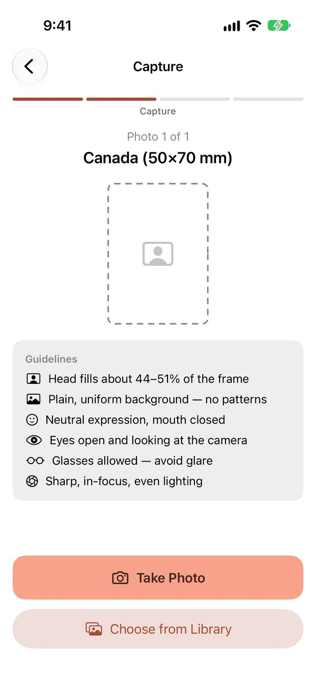
2. Take the photo
See the ID's rules up front, then take a photo or choose one from your library.
-
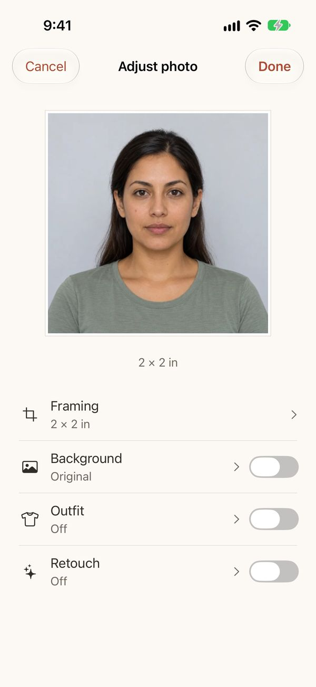
3. Refine
Adjust the framing, background, outfit, and retouching, all in one place.
-
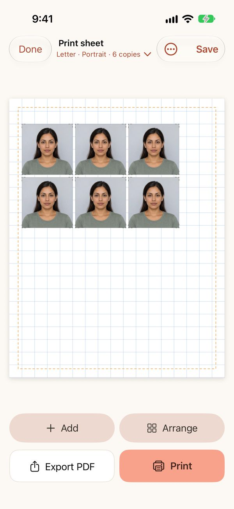
4. Print
Fill a sheet with copies, then print or export a PDF.
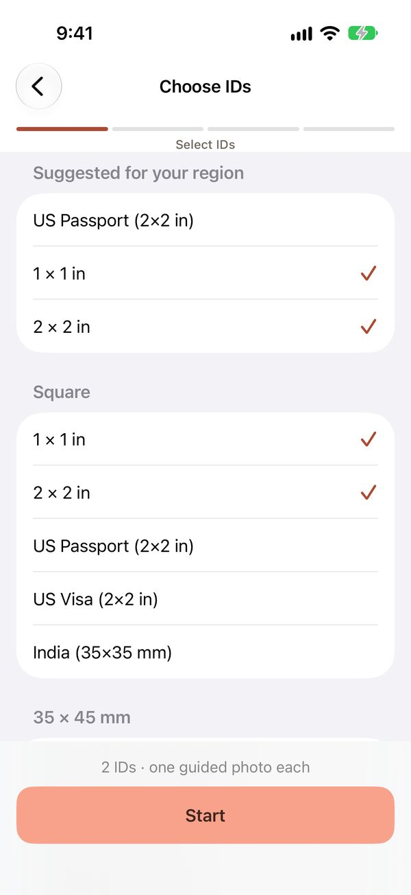
Several IDs in one go.
Need a passport photo and a 1 × 1 for work? Tick every size you need, and Tessy guides you through one photo for each. It suggests the sizes used in your region, with passport and visa sizes for 15 countries and regions plus common ID sizes.
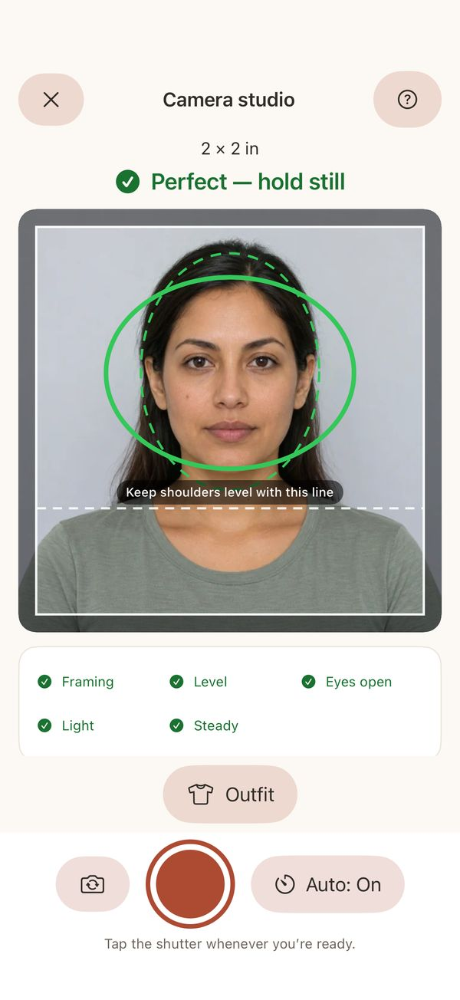
Checks as you shoot.
Live guides show where your face and shoulders belong. Tessy checks framing, level, open eyes, light, and steadiness, tells you when it's just right, and can take the shot for you.
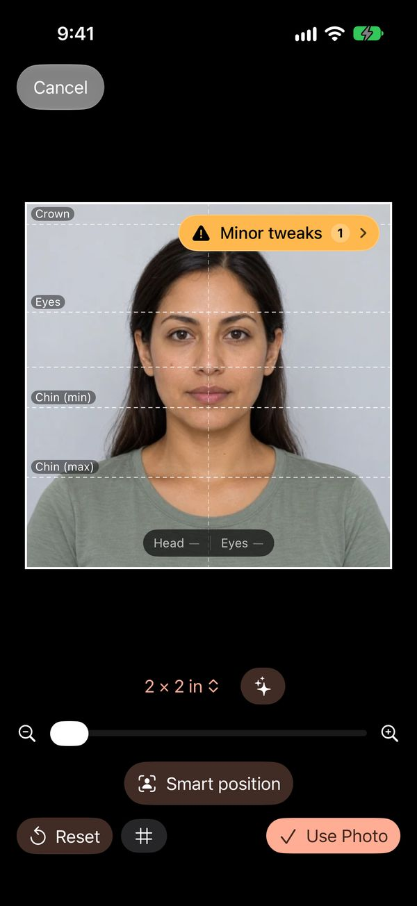
Framed to the official size.
Guide lines for the crown, eyes, and chin show exactly where your head should sit for the ID you chose. Smart position lines it up for you in one tap.
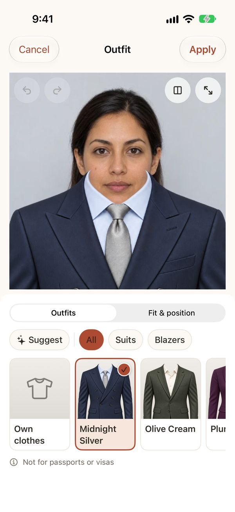
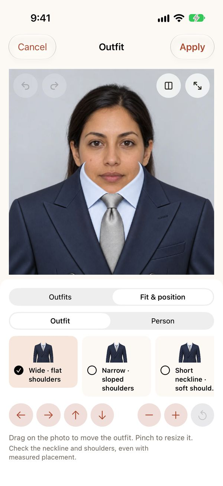
Dress the part.
Choose from 96 suits and blazers, then pick the cut that matches your shoulders and neckline. For passports and visas, outfits stay locked unless you choose otherwise, because many offices reject edited clothing.
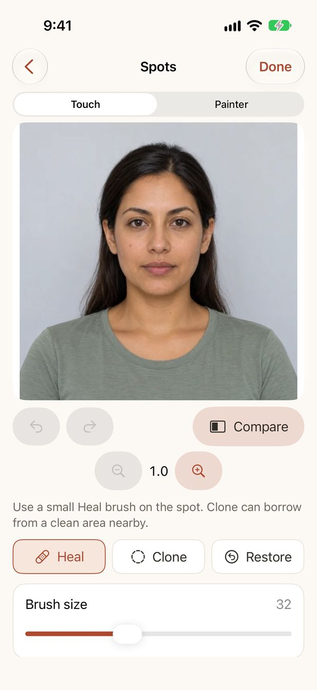
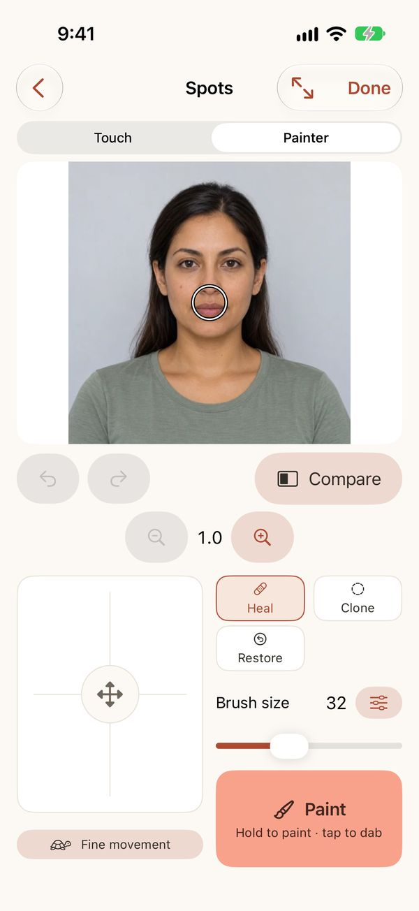
Gentle touch-ups.
Soften a blemish or tidy stray hairs. Tap with Touch, or switch to Painter for precise brushing. Clone borrows from a clean area nearby, and Restore brings back the original.
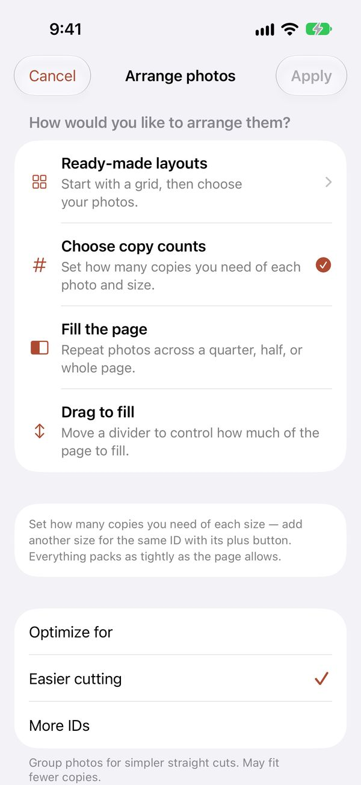
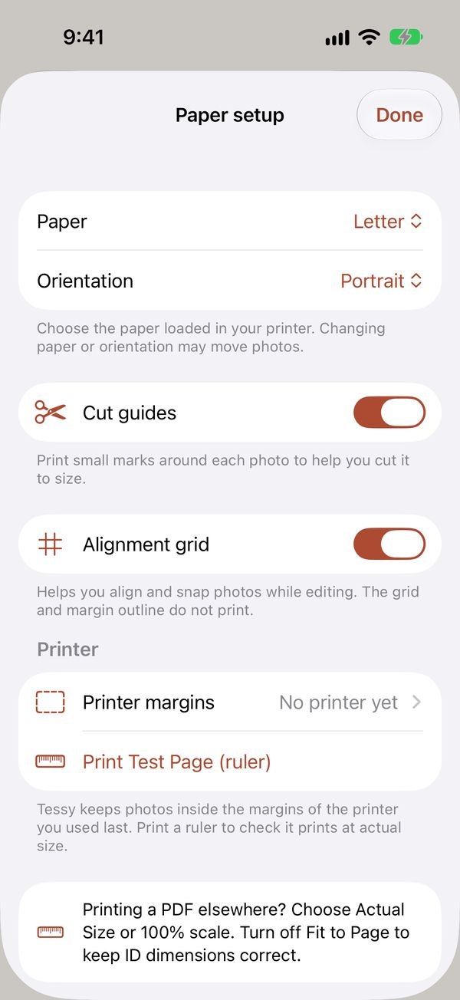
Prints true to size.
Choose a ready-made layout, set how many copies you need, or fill the page. Cut guides help you trim, and a ruler test page checks that your printer prints at actual size.
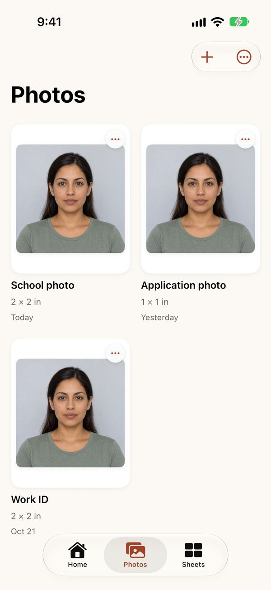
Your little photo studio.
Every ID photo and print sheet stays in one place on your device, ready to reprint, re-crop, or share. Deleted something by mistake? It waits in Recently Deleted for 30 days.
- Free to use
- Private – photos never leave your device
- No account needed
- No tracking or ads
- iPhone and iPad
- English, Spanish, and French